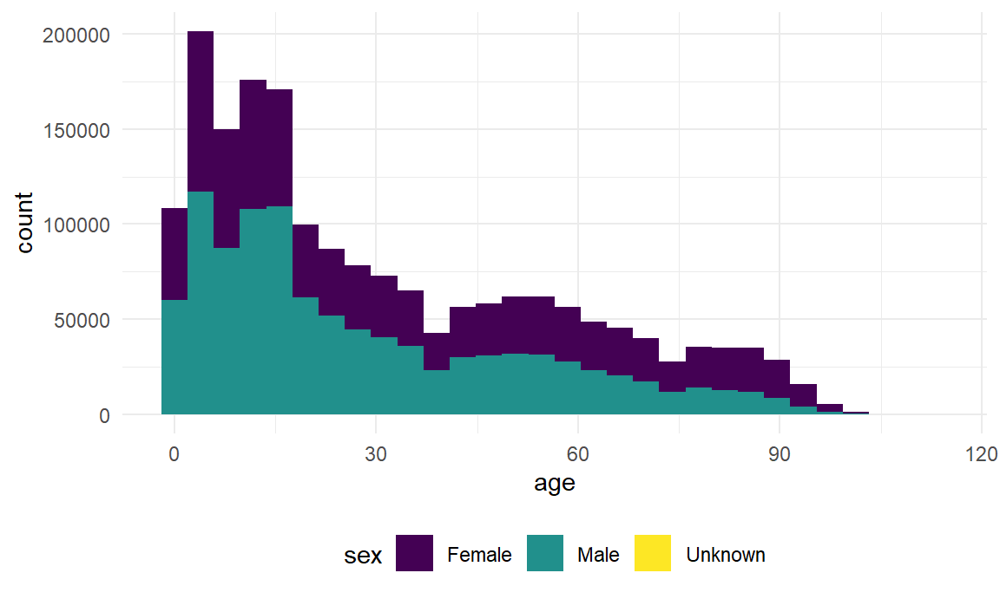
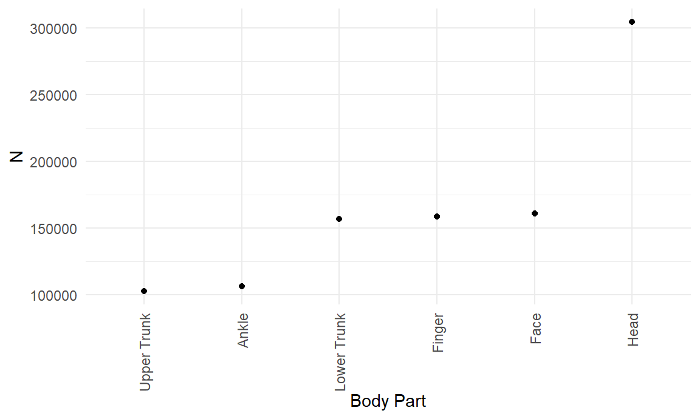
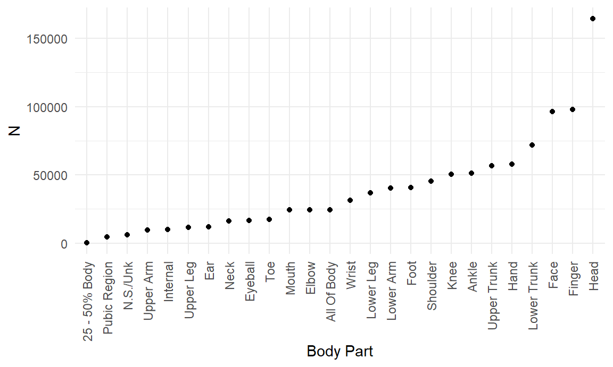
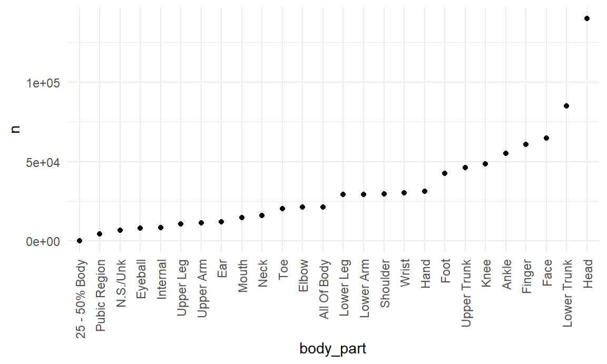

The figure above shows the distribution of injury cases by age stratified by gender. By the overlap in distributions, we see that there are more female injury cases compare to male injury cases.

Head injuries seem to be the top injured body by a substantial amount. We see that this is followed by face injuries which are related to head injuries .It is safe to say that the most injuries that occur affects the face or head.
| body_part | title | n | rank |
|---|---|---|---|
| Face | floors or flooring materials | 13909 | 1 |
| Face | stairs or steps | 10425 | 2 |
| Face | beds or bedframes, other or not spec | 10412 | 3 |
| Finger | knives, not elsewhere classified | 25350 | 1 |
| Finger | doors, other or not specified | 14924 | 2 |
| Finger | basketball (activity, apparel or equip.) | 10751 | 3 |
| Head | floors or flooring materials | 44220 | 1 |
| Head | stairs or steps | 25817 | 2 |
| Head | beds or bedframes, other or not spec | 25406 | 3 |
We took this a step further and explored the actions that attributed to the the top three injured parts. As we've seen previously, the top three injured body parts are the Head, Face, and Finger. This table shows us the top 3 causes for each of these injuries.

We then did this process and stratified them by Sex. Above we can see the top 3 injured body parts for males. When we compare this to the overall top 3, we see that they don't differ too much. Head injuries continue to lead by a substantial amount.
| body_part | title | n | rank |
|---|---|---|---|
| Face | floors or flooring materials | 6486 | 1 |
| Face | tables, not elsewhere classified | 6269 | 2 |
| Face | stairs or steps | 5660 | 3 |
| Finger | knives, not elsewhere classified | 14490 | 1 |
| Finger | basketball (activity, apparel or equip.) | 8225 | 2 |
| Finger | doors, other or not specified | 7420 | 3 |
| Head | floors or flooring materials | 19268 | 1 |
| Head | stairs or steps | 12492 | 2 |
| Head | beds or bedframes, other or not spec | 12430 | 3 |
We also decided to break this down and evaluate the top 3 causes for each of the top injured body parts for males. The top causes for Head and Face injuries were floors or flooring materials. For Finger injuries the top cause was knives.

Above we can see the top 3 injured body parts for females. When we compare this to the overall top 3, we see that notable difference. Head injuries continue to lead by a substantial amount but we are introduced to Lower Trunk injures at second. We haven't previously seen this before. This is interesting because this brings up discussion about why we see this difference between male and female.
| body_part | title | n | rank |
|---|---|---|---|
| Face | floors or flooring materials | 7423 | 1 |
| Face | beds or bedframes, other or not spec | 4838 | 2 |
| Face | stairs or steps | 4765 | 3 |
| Head | floors or flooring materials | 24952 | 1 |
| Head | stairs or steps | 13324 | 2 |
| Head | beds or bedframes, other or not spec | 12976 | 3 |
| Lower Trunk | floors or flooring materials | 15498 | 1 |
| Lower Trunk | stairs or steps | 11668 | 2 |
| Lower Trunk | beds or bedframes, other or not spec | 6770 | 3 |
We also decided to break this down and evaluate the top 3 causes for each of the top injured body parts for females. The top causes for Head and Face injuries were floors or flooring materials. This remained consistent with the top three causes seen by males injuries.In addition, we see that the top cause for lower Lower trunk injury is also floors and flooring material. We can conclude from this information that floors or florring materials are the top cause for injury within the top 3 female injures.